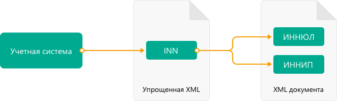

Работа с документами в 820 формате¶
Приказом ФНС России от 19.12.2018 №ММВ-7-15/820@ утвержден новый формат электронных докуменов, который можно использовать как:
счет-фактуру;
первичный документ, подтверждающий совершение хозяйственной операции;
универсальный передаточный документ (УПД), который совмещает в себе счет-фактуру и первичный документ, подтверждающий совершение хозяйственной операции.
Примечание
Форма универсального передаточного документа, а также рекомендации по его заполнению приведены в письме ФНС России от 21.10.13 № ММВ-20-3/96@.
Рассмотрим на примере УПД сценарий работы с документами 820 формата. Методы и подходы, описанные ниже, можно использовать также для работы с накладными, актами и счетами-фактурами в 820 формате.
Сценарий включает в себя следующие шаги:
Продавец:
генерирует титул продавца,
отправляет его покупателю.
Покупатель:
получает титул продавца
при необходимости парсит полученный титул,
генерирует титул покупателя,
отправляет его продавцу.
Генерация титула продавца¶
Для генерации необходимо использовать метод GenerateTitleXml.
В теле запроса должен содержаться упрощенный XML-файл, соответствующий XSD-схеме контракта для генерации титула. XSD-схема контракта, необходимого для генерации титула, может быть получена с помощью ссылки, доступной в поле UserDataXsdUrl контракта DocumentTitle, который можно получить с помощью метода-справочника GetDocumentTypes.
Вызовем метод GetDocumentTypes и найдем интересующие нас тип-функцию-версию. Для УПД в 820 формате возьмем следующие значения:
TypeNamedId=UniversalTransferDocumentFunction=СЧФДОПVersion=utd820_05_01_02_hyphenIndexTitle=0(титул продавца)
Ответ метода GetDocumentTypes:
"Name": "UniversalTransferDocument",
"Title": "УПД",
"SupportedDocflows": [0],
"RequiresFnsRegistration": true,
"Functions": [
{
"Name": "СЧФДОП",
"Versions": [
{
"Version": "utd820_05_01_02_hyphen",
"SupportsContentPatching": true,
"SupportsEncrypting": true,
"SupportsPredefinedRecipientTitle": false,
"SupportsAmendmentRequest": true,
"Titles": [
{
"Index": 0,
"IsFormal": true,
"XsdUrl": "/GetContent?typeNamedId=UniversalTransferDocument&function=СЧФДОП&version=utd820_05_01_02_hyphen&titleIndex=0&contentType=TitleXsd",
"UserDataXsdUrl": "/GetContent?typeNamedId=UniversalTransferDocument&function=СЧФДОП&version=utd820_05_01_02_hyphen&titleIndex=0&contentType=UserContractXsd",
"SignerInfo":
{
"SignerType": 2,
"ExtendedDocumentTitleType": 0
},
"MetadataItems": [...],
"EncryptedMetadataItems": [...]
}
],
"IsActual": true,
"Workflows": [
{
"Id": 16,
"IsDefault": true
},
{
"Id": 5,
"IsDefault": false
}
]
}
]
}
]
Теперь нужно подготовить контент для титула. Титул — это xml-файл, соответствующий xsd-схеме. Часть данных в титуле может быть заполнена только пользователем — это информация о товарах, услугах и т.д. А часть данных может быть заполнена автоматически на основании формата и информации в Диадоке. Например, заполнить реквизиты организации продавца и покупателя по идентификатору ящика, установить значения КНД, версии формата, версии программы и т.д. Для упрощения генерации, Диадок позволяет заполнить только «пользовательский» xml-файл, он же UserDataXml. На базе UserDataXml метод генерации сформирует основной титул, дополнив его всеми необходимыми данными согласно xsd-схеме.
Общая схема работы:
Как формировать UserDataXml — выбор разработчика интеграционного решения. Один из путей — это кодогенерация из xsd-схемы упрощённого титула. Ссылка на схему находится в поле UserDataXsdUrl ответа метода GetDocumentTypes, приведенного выше.
В C# SDK для всех версий формата приказа №820 есть пример кодогенерации.
Кодогенерация осуществлена инструментом xsd.exe.
Чтобы воспользоваться ей в C#-клиенте, достаточно заполнить объект UniversalTransferDocument для титула отправителя (или UniversalTransferDocumentBuyerTitle для титула получателя) и затем сериализовать в XML.
Итого, имея идентификаторы типа, функции, версии, порядкового номера титула, а также пользовательский контент, можно получить сам титул УПД.
Пример http-запроса:
POST /GenerateTitleXml?boxId=a96be310-0982-461a-8b2a-91d198b7861c&documentTypeNamedId=UniversalTransferDocument&documentFunction=СЧФДОП&documentVersion=utd820_05_01_02_hyphen&titleIndex=0 HTTP/1.1
Host: diadoc-api.kontur.ru
Authorization: DiadocAuth ddauth_api_client_id={{ключ разработчика}}, ddauth_token={{авторизационный токен}}
Content-Type: application/xml; charset=utf-8
Пример UserDataXml (тело запроса):
<?xml version="1.0" encoding="utf-8"?>
<UniversalTransferDocumentWithHyphens Function="СЧФДОП"
DocumentDate="01.08.2019"
DocumentNumber="140"
DocumentCreator="1"
DocumentCreatorBase="1"
CircumFormatInvoice="4"
Currency="643" >
<Sellers>
<Seller>
<OrganizationDetails OrgType="2"
Inn="114500647890"
FnsParticipantId="2BM-participantId1"
OrgName="ИП Продавец Иван Иванович">
<Address>
<RussianAddress Region="02"/>
</Address>
</OrganizationDetails>
</Seller>
</Sellers>
<Buyers>
<Buyer>
<OrganizationReference OrgType="1"
BoxId="53d55d52-9317-4ad4-a7d9-5e9dd3cd6367"/>
</Buyer>
</Buyers>
<Table TotalWithVatExcluded="0" Vat="0" Total="0">
<Item Product="Товарная позиция"
Unit="796"
Quantity="0"
Price="0"
TaxRate="без НДС"
SubtotalWithVatExcluded="0"
Vat="0"
Subtotal="0"
Excise="10"/>
</Table>
<TransferInfo OperationInfo="Товары переданы"/>
<Signers>
<SignerDetails Inn="123456789047"
LastName="Подписантов"
FirstName="Иван"
MiddleName="Иванович"
RegistrationCertificate="1"
SignerPowers="0"
SignerType="3"
SignerStatus="1"
SignerPowersBase="Должностные обязанности"/>
</Signers>
</UniversalTransferDocumentWithHyphens>
Пример получившегося титула (тело ответа):
<?xml version="1.0" encoding="windows-1251"?>
<Файл ИдФайл="ON_NSCHFDOPPR_2BM-9670670494-967001000-202201240241297341956_2BM-participantId1_20220124_f972e93e-4c69-4c9e-9656-be3a5a072e72" ВерсФорм="5.01" ВерсПрог="Diadoc 1.0">
<СвУчДокОбор ИдОтпр="2BM-participantId1" ИдПол="2BM-9670670494-967001000-202201240241297341956">
<СвОЭДОтпр ИННЮЛ="6663003127" ИдЭДО="2BM" НаимОрг="АО "ПФ "СКБ Контур"" />
</СвУчДокОбор>
<Документ КНД="1115131" ВремИнфПр="18.17.45" ДатаИнфПр="24.01.2022" НаимЭконСубСост="1" Функция="СЧФДОП" ПоФактХЖ="Документ об отгрузке товаров (выполнении работ), передаче имущественных прав (документ об оказании услуг)" НаимДокОпр="Счет-фактура и документ об отгрузке товаров (выполнении работ), передаче имущественных прав (документ об оказании услуг)" ОснДоверОргСост="1">
<СвСчФакт НомерСчФ="140" ДатаСчФ="01.08.2019" КодОКВ="643">
<СвПрод>
<ИдСв>
<СвИП ИННФЛ="114500647890">
<ФИО Фамилия="Продавец" Имя="Иван" Отчество="Иванович" />
</СвИП>
</ИдСв>
<Адрес>
<АдрРФ КодРегион="02" />
</Адрес>
</СвПрод>
<СвПокуп>
<ИдСв>
<СвЮЛУч НаимОрг="Документация-получатель" ИННЮЛ="9670670494" КПП="967001000" />
</ИдСв>
<Адрес>
<АдрРФ Индекс="777777" КодРегион="50" Город="г. Москва" />
</Адрес>
</СвПокуп>
<ДопСвФХЖ1 НаимОКВ="Российский рубль" ОбстФормСЧФ="4" />
</СвСчФакт>
<ТаблСчФакт>
<СведТов НомСтр="1" НаимТов="Товарная позиция" ОКЕИ_Тов="796" КолТов="0" ЦенаТов="0.00" СтТовБезНДС="0.00" НалСт="без НДС" СтТовУчНал="0.00">
<Акциз>
<СумАкциз>
10.00
</СумАкциз>
</Акциз>
<СумНал>
<СумНал>0.00
</СумНал>
</СумНал>
<ДопСведТов НаимЕдИзм="шт" />
</СведТов>
<ВсегоОпл СтТовБезНДСВсего="0.00" СтТовУчНалВсего="0.00">
<СумНалВсего>
<СумНал>
0.00
</СумНал>
</СумНалВсего>
</ВсегоОпл>
</ТаблСчФакт>
<СвПродПер>
<СвПер СодОпер="Товары переданы">
<ОснПер НаимОсн="Без документа-основания" />
</СвПер>
</СвПродПер>
<Подписант ОснПолн="Должностные обязанности" ОблПолн="0" Статус="1">
<ФЛ ИННФЛ="123456789047">
<ФИО Фамилия="Подписантов" Имя="Иван" Отчество="Иванович" />
</ФЛ>
</Подписант>
</Документ>
</Файл>
Отправка документа¶
Сценариев отправки может быть несколько:
Загрузить документ как Черновик. Это можно сделать через API и в веб-интерфейсе. В веб-интерфейсе подписать черновик и отправить
Загрузить документ как Исходящий неотправленный. Это можно сделать через API или в веб-интерфейсе. В веб-интерфейсе подписать документ и отправить
Подписать и отправить документ полностью через API
Для всех трех случаев необходимо использовать метод ..http/PostMessage со структурой DocumentAttachment. В зависимости от сценария отправки передаваемый контент в теле запроса будет разный.
Рассмотрим пример третьего варианта, когда документ сразу подписывается и отправляется. Как сформировать подпись для документа определяет разработчик интеграционного решения.
Тело запроса PostMessage
{
"FromBoxId": "a96be310-0982-461a-8b2a-91d198b7861c",
"ToBoxId": "13254c42-b4f7-4fd3-3324-0094aeb0f15a",
"DocumentAttachments": [
{
"SignedContent":
{
"Content": "PD94bWwgdmVyc2lvbj0iMS4wIiBlbmNvZGluZz0...NC50Ls+", //контент xml-файла в кодировке base-64
"Signature": "MIIN5QYJKoZIhvcNAQcCoIIN1jCCDdIA...kA9MJfsplqgW", //контент файла подписи в кодировке base-64
},
"TypeNamedId": "UniversalTransferDocument",
"Function": "СЧФДОП",
"Version": "utd820_05_01_02_hyphen"
}
]
}
Получение титула продавца в ящике покупателя¶
Титул продавца доставлен в ящик получателя. Об этом можно узнать при помощи методов чтения ленты новостей GetNewEvents и GetDocflowEvents (версия 3). Как понять, что это документ именно 820 формата? В ответе каждого из методов чтения ленты новостей возвращается версия документа (поле Version). Для документов 820 формата версия будет начинаться с utd820 (например, utd820_05_01_02_hyphen).
Из ленты новостей можно определить идентификатоы документа MessageId, DocumentId и при необходимости запросить дополнительную информацию по документу, используя методы GetMessage, GetDocument, GetDocflows (версия 3).
Парсинг документа¶
Парсинг полученного титула можно не выполнять, а достать все необходимые данные сразу из полученного титула продавца. Но если интегратору удобнее работать с упрощенным xml (UserDataXml), то можно выполнить парсинг при помощи метода ParseTitleXml.
Для того, чтобы распарсить документ, нужно знать тип документа, функцию, версию, номер титула. Тип, функцию и версию можно узнать из ответов методов GetNewEvents, GetMessage, GetDocument, GetDocflowEvents (версия 3), GetDocflows (версия 3) или использовать метод детектирования DetectDocumentTypes для полученного титула продавца.
Пример http-запроса:
POST /ParseTitleXml?boxId=13254c42-b4f7-4fd3-3324-0094aeb0f15a&documentTypeNamedId=UniversalTransferDocument&documentFunction=СЧФДОП&documentVersion=utd820_05_01_02_hyphen&titleIndex=0 HTTP/1.1
Host: diadoc-api.kontur.ru
Authorization: DiadocAuth ddauth_api_client_id={{ключ разработчика}}, ddauth_token={{авторизационный токен}}
Content-Type: application/xml; charset=utf-8
В теле запроса должен быть xml полученного титула.
В теле ответа будет упрощенный xml (UserDataXml), аналогичный тому, который был использован при генерации. Не всегда упрощенный xml в теле ответа метода парсинга будет совпадать с упрощенным xml в теле запроса метода генерации. Это связано с тем, что при генерации документа мы можем автоматически заполнять какие-то данные в титуле. Например по идентификатору ящика можно определить все его реквизиты - ИНН, КПП, наименование и т.д. Соответственно после парсинга в упрощенном xml будут указаны ИНН, КПП и наименование организации, а не идентификатор ящика, как это было до генерации.
Каким образом дальше работать с полученным упрощенным xml, чтобы данные из него загрузить в свою учетную систему (или использовать для других целей), — решает интегратор.
Генерация титула покупателя¶
Генерация титула покупателя выполняется аналогично титулу продавца.
Для генерации используйте метод GenerateTitleXml. В теле запроса должен содержаться упрощенный XML-файл (UserDataXml), соответствующий XSD-схеме контракта, который мы использовали для генерации титула. В теле ответа будет xml титула покупателя.
Для получения xsd-схемы вызовем метод GetDocumentTypes и найдем интересующие нас тип-функцию-версию. Для титула покупателя УПД в 820 формате возьмем те же значения, что и для титула продавца, но номер титула будет другой:
TypeNamedId=UniversalTransferDocumentFunction=СЧФДОПVersion=utd820_05_01_02_hyphenIndexTitle=1(титул покупателя)
Ответ метода GetDocumentTypes:
"Name": "UniversalTransferDocument",
"Title": "УПД",
"SupportedDocflows": [0],
"RequiresFnsRegistration": true,
"Functions": [
{
"Name": "СЧФДОП",
"Versions": [
{
"Version": "utd820_05_01_02_hyphen",
"SupportsContentPatching": true,
"SupportsEncrypting": true,
"SupportsPredefinedRecipientTitle": false,
"SupportsAmendmentRequest": true,
"Titles": [
{
"Index": 1,
"IsFormal": true,
"XsdUrl": "/GetContent?typeNamedId=UniversalTransferDocument&function=СЧФДОП&version=utd820_05_01_02_hyphen&titleIndex=1&contentType=TitleXsd",
"UserDataXsdUrl": "/GetContent?typeNamedId=UniversalTransferDocument&function=СЧФДОП&version=utd820_05_01_02_hyphen&titleIndex=1&contentType=UserContractXsd",
"SignerInfo":
{
"SignerType": 2,
"ExtendedDocumentTitleType": 8
},
"MetadataItems": [...],
"EncryptedMetadataItems": [...]
}
],
"IsActual": true,
"Workflows": [
{
"Id": 16,
"IsDefault": true
},
{
"Id": 5,
"IsDefault": false
}
]
}
]
}
]
Далее необходимо подготовить UserDataXml. Как это делается подробно описано для титула продавца.
После того, как UserDataXml готов, можно запускать генерацию титула покупателя.
Пример http-запроса:
POST /GenerateTitleXml?boxId=13254c42-b4f7-4fd3-3324-0094aeb0f15&documentTypeNamedId=UniversalTransferDocument&documentFunction=СЧФДОП&documentVersion=utd820_05_01_02_hyphen&titleIndex=1&letterId=93bdfb88-7b80-484d-883d-765102ca5af5&documentId=fc3c3811-3368-4e47-95f4-5334b9a42654 HTTP/1.1
Host: diadoc-api.kontur.ru
Authorization: DiadocAuth ddauth_api_client_id={{ключ разработчика}}, ddauth_token={{авторизационный токен}}
Content-Type: application/xml; charset=utf-8
Пример UserDataXml (тело запроса):
<?xml version="1.0" encoding="utf-8"?>
<UniversalTransferDocumentBuyerTitle DocumentCreator="ИП Покупатель Иван Иванович" OperationContent="Принято без претензий" xmlns:xs="http://www.w3.org/2001/XMLSchema">
<Signers>
<SignerDetails LastName="Покупатель"
FirstName="Иван"
MiddleName="Иванович"
SignerPowers="1"
SignerPowersBase="Должностные обязанности"
SignerStatus="5"
SignerType="2"
Inn="114500647890" />
</Signers>
</UniversalTransferDocumentBuyerTitle>
Пример получившегося титула покупателя (тело ответа):
<?xml version="1.0" encoding="windows-1251"?>
<Файл ИдФайл="ON_NSCHFDOPPOK_2BM-participantId1_2BM-participantid2_f3caa5ab-5033-431f-ba0d-3312ee82b25b" ВерсФорм="5.01" ВерсПрог="Diadoc 1.0">
<СвУчДокОбор ИдОтпр="2BM-7750370234-4012052808304878702630000000000" ИдПол="2BM-7750370234-4012052808304878702630000000004">
<СвОЭДОтпр ИННЮЛ="6663003127" ИдЭДО="2BM" НаимОрг="АО "ПФ "СКБ Контур"" />
</СвУчДокОбор>
<ИнфПок КНД="1115132" ВремИнфПок="14.50.14" ДатаИнфПок="17.10.2019" НаимЭконСубСост="ИП Покупатель Иван Иванович">
<ИдИнфПрод ВремФайлИнфПр="14.32.21" ДатаФайлИнфПр="20.05.2019" ИдФайлИнфПр="ON_NSCHFDOPPR_2BM-participantId2_2BM-participantId1_20191011_2ebfc880-6e31-4042-8302-c5201523fc3c">
<ЭП>MIAGCSqGSIb3DQEHAq...agAAAAAAAA==</ЭП>
</ИдИнфПрод>
<СодФХЖ4 ДатаСчФИнфПр="01.02.2003" НаимДокОпрПр="Счет-фактура и документ об отгрузке товаров (выполнении работ), передаче имущественных прав (документ об оказании услуг)" Функция="СЧФДОП" НомСчФИнфПр="140">
<СвПрин СодОпер="Принято без претензий" />
</СодФХЖ4>
<Подписант ОснПолн="Должностные обязанности" ОблПолн="1" Статус="5">
<ИП ИННФЛ="114500647890">
<ФИО Фамилия="Покупатель" Имя="Иван" Отчество="Иванович" />
</ИП>
</Подписант>
</ИнфПок>
</Файл>
Отправка титула покупателя¶
Готовый титул покупателя можно подписать и отправить продавцу при помощи метода PostMessagePatch. Как сформировать подпись определяет разработчик интеграционного решения.
Пример http-запроса для отправки документа
POST /V3/PostMessagePatch HTTP/1.1
Host: diadoc-api.kontur.ru
Authorization: DiadocAuth ddauth_api_client_id={{ключ разработчика}}, ddauth_token={{авторизационный токен}}
Content-Type: application/json; charset=utf-8
Тело запроса:
"BoxId": "13254c42-b4f7-4fd3-3324-0094aeb0f15",
"MessageId": "93bdfb88-7b80-484d-883d-765102ca5af5",
"RecipientTitles":
[
{
"ParentEntityId":"fc3c3811-3368-4e47-95f4-5334b9a42654",
"SignedContent":
{
"Content": "PD94bWwgdmVyc2l...LDQudC7Pg==",
"Signature": "MIIN5QYJKoZIhvc...KsTM6zixgz"
}
}
]
В результате получаем УПД с подписанными двумя титулами.
В данной статье не рассмотрены примеры для генерации и отправки извещений о получении, а также запроса уточнения. С ними работа осуществляется также, как и для документов в 155 формате:
для генерации xml-файла извещения необходимо использовать метод GenerateReceiptXml,
для отправки извещения - метод PostMessagePatch и структуру Receipt,
для отправки запроса уточнения - метод PostMessagePatch и структуру CorrectionRequest
Схемы титулов и UserDataXml¶
Актуальные xsd-схемы титулов и UserDataXml рекомендум получать при помощи метода GetDocumentTypes.
Ниже приведены xsd-схемы для версии utd820_05_01_02_hyphen: